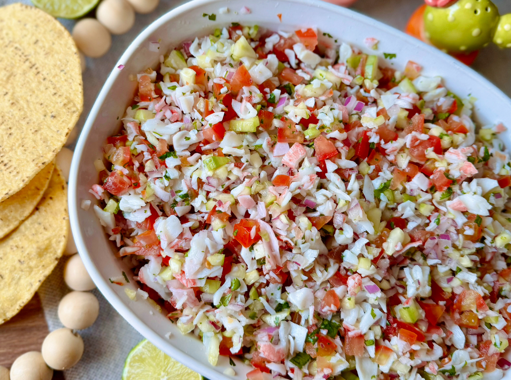

Crab Ceviche Recipe
Description
This Crab Ceviche is made with imitation crab meat, fresh tomatoes, red onions, cucumber and cilantro, all marinated in zesty lime juice. Perfect for hot weather, this easy, no-cook dish is both healthy and delicious, ideal for a light and nutritious meal.
Ingredients
- Tostadas or tortilla chips
- 32oz imitiation crab meat, chopped
- 5 roma tomatoes, chopped
- 2 cucumbers, peeled and chopped
- ½ red onion, finely diced
- 2 limes
- 2 tsp salt
- 2 bell peppers, chopped
- 2 jalapeno or serrano peppers, finely diced
- 4 avocados, sliced
- 2 tbsp hot sauce (optional)
Steps
- Add crab meat, tomatoes, cucumbers, red onion, peppers, and avocados to a large bowl, including juice from the limes. Gently toss to combine.
- Taste and add more salt, lime juice or hot sauce if needed.
- Enjoy immediately or cover and refrigerate until ready to eat.